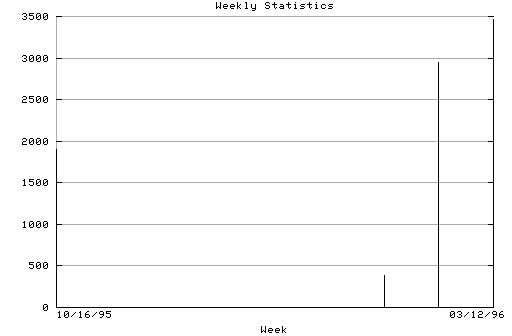

HTTP Server Weekly Statistics
Covers: 10/16/95 to 03/11/96 (148 days).
All dates are in local time.
Week of 10/16/95: 1906 : ###################################### Week of 10/23/95: 582 : ############ Week of 10/30/95: 167 : ### Week of 10/29/95: 388 : ######## Week of 11/06/95: 541 : ########### Week of 11/13/95: 403 : ######## Week of 11/20/95: 348 : ####### Week of 11/27/95: 625 : ############# Week of 12/04/95: 1025 : ##################### Week of 12/11/95: 692 : ############## Week of 12/18/95: 478 : ########## Week of 12/25/95: 674 : ############# Week of 01/01/96: 562 : ########### Week of 01/08/96: 828 : ################# Week of 01/15/96: 954 : ################### Week of 01/22/96: 904 : ################## Week of 01/29/96: 975 : #################### Week of 02/05/96: 771 : ############### Week of 02/12/96: 645 : ############# Week of 02/19/96: 2949 : #############################################||### Week of 02/26/96: 2688 : #############################################||### Week of 03/05/96: 3466 : #############################################||### Week of 03/12/96: 27 : #

Statistics generated at Mon Mar 11 03:16:44 MET 1996, (C) Schibsted Nett AS, 1995.